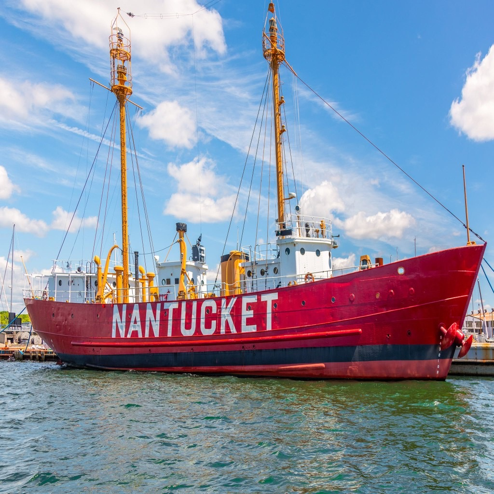

LV-112
About LV-112
Home › About LV-112
About LV-112
Rescuing a U.S. National Historic Landmark.

Lifelines on the sea
Lightships were stationed at the most dangerous areas along the U.S. oceanic and Great Lakes coastlines. These floating sentinels were part of a lifeline that played an important role in the development of our country. They are a part of our maritime heritage and serve as a memorial to the brave U.S. Coast Guard (USCG) lightship sailors who served on them, risking and sacrificing their lives.
Lightship duty for crewmembers was extremely hazardous, especially on the Nantucket Shoals station — considered the most dangerous lightship assignment in the USCG and the world.
During the winter months, nor’easters could last for days. Howling winds and mountainous seas tossed lightships so violently, even the most seasoned sailors became seasick. The constant odor of diesel fumes was equally nauseating, in addition to the ship's piercing and incessant fog signals, which caused ear pain and even deafness.
A lightship station at night was a profoundly lonely and dangerous place to be, especially during foul weather. Located beyond sight of land in the pitch-black isolation of night, the ship’s only sign of civilization was the ephemeral passing of ships, which could possibly be called upon for emergency assistance.
Poor visibility is another hazard on the Nantucket Shoals, where blinding fog is a common occurrence. There was always the threat of being rammed by huge freighters, tankers or ocean liners trying to navigate through the pea-soup murkiness.
Like a traffic cop at a busy intersection, Nantucket Lightship / LV-112 was stationed in one of the busiest shipping lanes in the world, sometimes referred to as “the Times Square of the Atlantic.” (Desperate Hours) There were numerous accounts of near misses and actual collisions involving “the Nantucket.”
During World War II (1942-1945), LV-112 was withdrawn from lightship duty, painted battleship gray, designated as the USS Nantucket and served as an examination Patrol Vessel off Portland, Maine; saved crewmembers of the USS Eagle-56, which was torpedoed and sunk off Portland by a German U-Boat, U-853. After sinking another U.S. merchant ship off Port Judith, Rhode Island, the U-853 was tracked down and sunk by the U.S. Navy in Rhode Island waters, where it lies submerged to this day.
Nantucket Shoals was no stranger to ship collisions and fatal sinkings. On July 25, 1956, the ill-fated Andrea Doria passed within one mile of the station. However, on that day LV-112 was not on station. She had been temporarily relieved by Relief / LV-114 / WAL 536 (LV-114 later became New Bedford, but was scrapped in 2007 after a long period of neglect and sinking at her dock. More than $200,000 of taxpayer money was spent raising her, only to have her sold to a salvage company for just $10,000.).
Lightship duty was not always horrific. The sea can sometimes be exceedingly calm, and there were times of peace and solitude with occasional visits by whales and dolphins.
In all, 179 lightships were built between 1820 through 1952. At one time, 51 (46 on the eastern seaboard and 5 on the Pacific Coast) lightships were stationed at various locations around the United States. Today, only 17 lightships still exist.
Eight of these lightships have qualified for National Historic Landmark status by possessing unique characteristics of historic significance; they are currently public museums. National Historic Landmark designation, which currently only includes under 2,500 structures, is considered a more prestigious designation than a listing on the register of National Historic Places, which currently includes approximately 85,000 structures.
LV-112 Facts
The U.S. Nantucket Lightship / LV-112 was built by Pusey & Jones Shipbuilders in 1936 at Wilmington, Delaware, as a steam-propelled vessel with a compound reciprocating engine that included two oil fired Babcock-Wilcox water tube boilers, producing a maximum speed of 12 knots. Her $300,956 cost, greater than that of any predecessor, was paid for by the White Star Line as compensation for the 1934 collision and sinking of LV-112’s predecessor, LV-117, which while on duty at Nantucket station, was rammed by the RMS Olympic, the sister ship to the Titanic. Seven of the lightship’s 11 crew members were killed. In 1960, LV-112 underwent major modifications, modernization and refitting: smoke stack removed; re-powered with Cooper-Bessemer 900 HP diesel main engine; up until this time, LV-112 was the last steam-propelled U.S. lightship. Her navigational lighting aids also were updated.
- Largest lightship ever built in the United States
- Built to the specifications of a war time U.S. Navy vessel with a double hull, double hull shell plating and a high degree of compartmentalization (43). LV-112 was designed and built to be virtually unsinkable.
- Served longer than any other U.S. lightship on Nantucket Station — 39 years
- Last of the U.S. lightship stations to be discontinued (1985)
- Farthest offshore station (100 miles from the mainland)
- Only U.S. lightship stationed in international waters
- Last lightship seen by vessels departing the United States and the first beacon seen entering U.S. waters
- Declared a National Historic Landmark in 1989 by the National Park Service — U.S. Department of the Interior
- Selected as a National Treasure in 2012 (one of 32 in the United States) by the National Trust for Historic Preservation
LV-112 specifications:
Length: 148’ 10” | Beam: 32’ | Draft: 16’ | Tonnage: 1,050 displ.
Most U.S. lightships of the same vintage or later averaged 500-600 displacement tons.
Moving and rescuing the ship
The Nantucket Lightship was transported to Boston Harbor in May 2010 from Oyster Bay, NY where she sat idle for the last eight years. LV-112 is currently berthed in East Boston at the Boston Harbor Shipyard & Marina. For all her years on the seas and in port, the ship is seaworthy and essentially in sound condition. Many people have cared about her past and her future.
Since LV-112’s decommissioning in 1975 in Boston, the historic ship has been used as a museum and has changed ownership and ports several times. Past owners were well intentioned, but LV-112 repeatedly fell victim to politics, lack of adequate marketing and media coverage, and most importantly, funding.
On October 20, 2009, the United States Lightship Museum (USLM), a 501(c)3 nonprofit organization, became LV-112's new owners / steward. The USLM is implementing a strategy that includes LV-112's continuation as a lightship museum and floating school with a primary focus on showcasing its remarkable history. Fortunately, the transfer of LV-112's ownership includes a Covenant intended to prevent the lightship from ever being used for anything other than a nonprofit museum and educational institution.
LV-112's restoration
There is cause to celebrate. So far the U.S. Lightship Museum (USLM) has restored 95% of LV-112's exterior (hull and superstructure). Most of the shipboard lighting has also been restored and is operational again. Presently, our restoration efforts are focused on LV-112's interior (i.e., electrical infrastructure, plumbing, heating system, ventilation, engines, etc.).
The main eight cylinder 900 HP Cooper-Bessemer diesel engine has not been operated for several years, but it appears to be in good condition and can be restarted. There are six other smaller (three GM-371's and three GM-271 engines) diesel engines (three electrical generators and three air compressors that start the main engine and operate the navigational fog signal). Two of the engines are currently in running condition. The others need varying degrees of repairs. Two of the electrical generators need extensive repair and restoration.
Throwing the ship a lifeline
The USLM has transported LV-112 back to Boston Harbor from Oyster Bay, Long Island, NY. While commissioned as a lightship, Nantucket / LV-112's home port was Boston (U.S. Coast Guard First District headquarters). LV-112 was also decommissioned in Boston. Once again, Boston is LV-112's home port.
Every little bit helps! Even if you can only afford $1.00, any amount you are able to contribute would be greatly appreciated. The United States Lightship Museum (USLM) is a 501(c)3 non-profit organization. Charitable donations are tax-deductible to the full extent allowed by law. If you prefer to mail in your contribution instead of donating electronically on our website (How to Help), please make your check payable to: USLM / Nantucket / LV-112 and mail it to: United States Lightship Museum, Inc., P.O. Box 454, Amesbury, MA 01913. Thank you!
Acknowledgements
We would like to thank the following for helping us with our research, regarding LV-112:
USCG Lightship Sailors Association, especially their President, Larry Ryan (lightship veteran, 1960-61), who was extremely helpful in assisting us with our historic research and providing lightship crew contacts.
USCG Historians Office, USCG Lightship Sailors Association International, crew members of LV-112, USCG Art Program, Overfalls Maritime Museum Foundation.
Other Information sources: “A History of U.S. Lightships” by Willard Flint, “Desperate Hours” by Richard Goldstein, the National Lighthouse Museum, National Park Service, The Boston Globe, Nantucket Inquirer and Mirror, and Jerry Roberts, Executive Director, Connecticut River Museum.
Robert Mannino, Jr., of South Hampton, New Hampshire, is spearheading the effort to save LV-112. He is a marketing communications and public relations consultant, specializing in development programs for nonprofit organizations including maritime museums, historical societies and shipbuilding preservation projects. His experience also includes chairing municipal historical commissions.